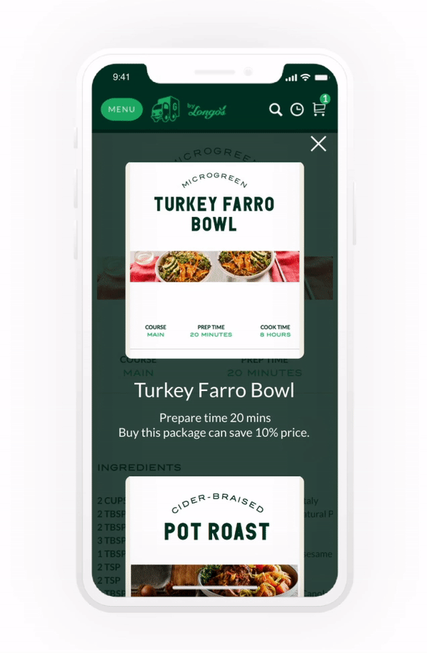

Our Challenge
Can we make the online grocery shopping experience tangible and conversation alike by using our voice to communicate our aims?
TEAM
Sara Cheng, Jinyun Park, Chih-Ling Kuo, Hanjing Gong, Yixuan Wu
DATE
Jan-Feb 2019
CONTEXT
Grocery Gateway collaborate with Humber UXD students to help them create Voice User Interface in the Online Grocery Shopping Experience.This project followed the methods of Sprint design process.
SKILL
How Might We Notes
Lightning Demos
Crazy 8’s Sketching
Prioritization Grid
Storyboard
Lo-Hi Fidelity prototype
Formal usability testing
This project won the 2019 Best Capstone Project of Humber UXD Award
What is "Sprint"?
Sprint
A design sprint is a five-phase framework that takes place over a 3 to 5 day period that helps answer critical business questions through rapid prototyping and user testing. — Vicky
The Process of Google Design Sprint
Sprint Day 1 - Defining the Problem
Sprint Questions
Sprint Questions
We started off by listing down questions we wanted to answer for this sprint on day 1.
Some questions include:
In what situation do people use voice command?
How can voice command process orders?
Who can benefit?
Map
We then moved on to create a map to illustrate how a customer might go through and navigate the shopping experience on Grocery Gateway using the voice interface.
After we were done the Map, we got a rough structure of user flow.
Also got a good understanding of the potential problems from the Map.
Map
How Might We memos
How Might We notes
Then, we delved into the How might We technique.
How Might We technique helped us to define our challenge and opportunities to handle the potential problems.
We wrote some opportunities such as how might we order items based on specific recipes, how might we open inspiration function by saying ”yummy yummy ”.
Sprint Day 2 - Finding Ideas & Solutions
Lightning Demos
Lightning Demos
On Sprint Day two, we started off with lighting Demos.
We searched and review some companies in how they tackled using the voice in their interface.
We captured some ideas from Google Home, Google assistant, Amazon App, and Alexa, as well as determined which scheme might be useful for us to enhance our design.
Boot up Crazy 8’s Sketching
After the Lightning Demos, we diverged and individually started to sketch out some ideas and solutions that addressed the problem we were trying to solve in this sprint.
We all had a fun while create our sketching.
I also like that we comepared our sketching, and combined the ideas together.
Crazy 8’s Sketching
Sprint Day 3 - Making Decisions

Prioritization Grid
Prioritization Grid
At this point, we had to make some decisions, to remove some of the potential ideas from our Crazy 8’s Sketching session.
To get a clear view, we decided to organize our ideas into a prioritization grid to determine what was the most or least valuable component for the Grocery Gateway VUI, and what component was the most/least important to our users.
Mostly, the prioritization grid helped us determine what components are the most essential we should focus on while settling our design solutions.
Solution Sketch
After getting a clear view of what design solutions we should focus on based on our prioritization grid outcome, we reviewed our Crazy 8’s sketches together and picked out the best solution to explore and prototype for the sprint.

Solution Sketch
Storyboard
Storyboard
We created a storyboard to illustrate how and in what context a user might interact with the Grocery Gateway’s voice interface.
Charlie is a mother of 2 year old girl. She is a 33-year old woman who is currently having a part-time remote work home and taking care of her daughter. She spends lots of busy times at home and feels difficulties when she prepares meal plans and cooks foods. She really cares about the family health and always wants to cook healthy and nutritious foods for her husband and daughter. After her husband goes to work and her daughter goes to daycare, she also starts her part-time work or housework. She always feels busy and has not enough time to go grocery shopping. She used to do grocery shop online, but it even has been becoming harder as her daughter is growing. Whenever she is alone or with her daughter, her arms are not free since she has lots of roles. Now she wants to do grocery shop smarter, shorter, and more conveniently while doing her jobs. She also wants a shopping without spending so much time on watching and scrolling a screen to find items. Not to worry about family meal plans is her important desire as well since she raises a little girl.
Sprint Day 4 - Prototyping our Ideas

Wireframe
Wireframe
We started to create wireframes rapidly base on our solution sketches.
Prototype
After wireframing, we proceeded to create the high-fidelity prototype of our solution.
The following are our main ideas prototypes.
Prototype
Yummy Yummy Feature
‘Yummy Yummy’ is our special feature for inspiring users by recommending them some recipes ideas.
Users have an option to pick Breakfast, Lunch, Dinner, or Baby Food recipes.
Yummy yummy feature

Recipes Feature
Recipes Feature
Users are avaliable to share these recipes with their friends through social media.
Futhermore,they can purchase these recipes as a package at a discounted price.
Baby's food
The Baby’s Food recipe is mainly for families who are usually busy at home taking care of their young child.
The reason why these families face challenges to prepare meal plans and cook meals because of their busyness, and exhaustion as mealtime rolls around.

Baby's food
Prototype Videos
Yummu Yummy
Order and remove items
User Testing Script
Following we draft out our usability test script where we created scenarios and tasks for our users to complete during the test.
Sprint Day 5 - Getting User Feedback
Usability Testing
On our final sprint day, we conducted a usability test with 5 participants.
Usability testing
Feedback Grid
After the interviews, we analyzed our participants feedback and then organized them into a feedback grid to get a visual representation of our findings
Feedback Grid


{kind=link}